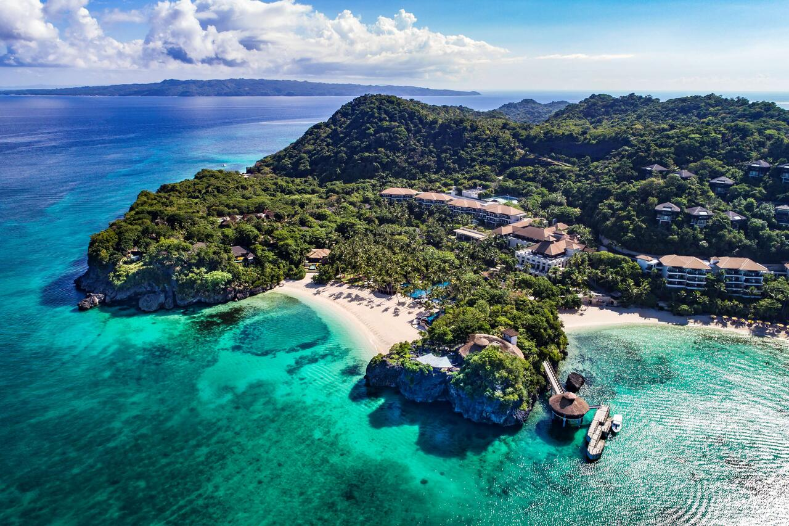
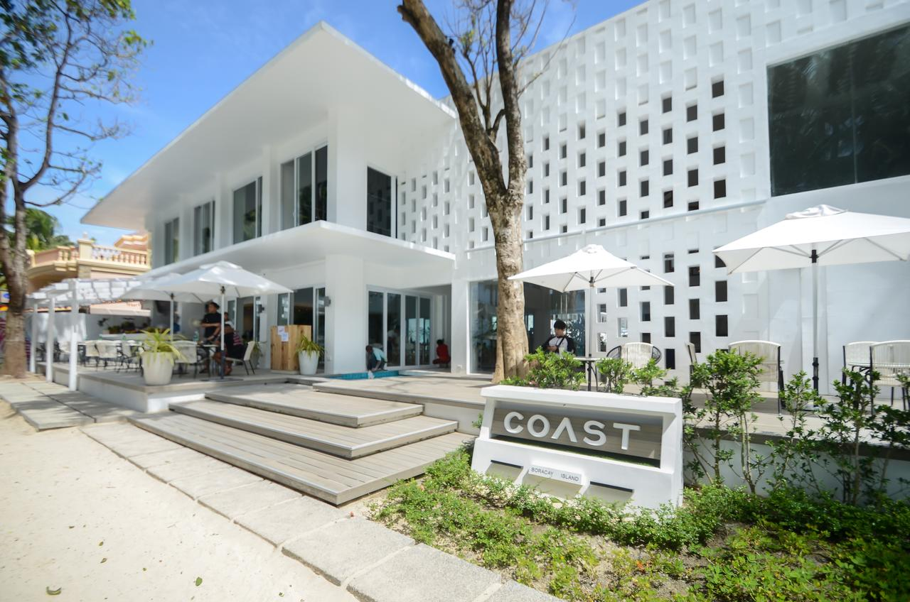
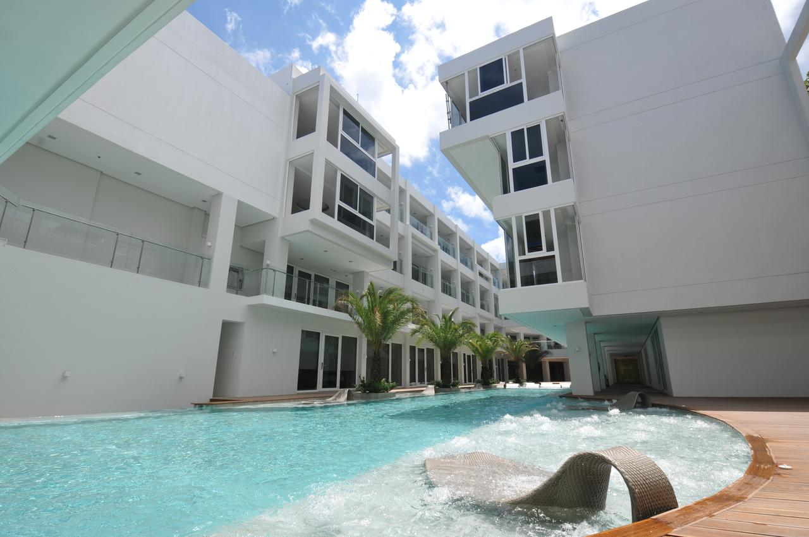
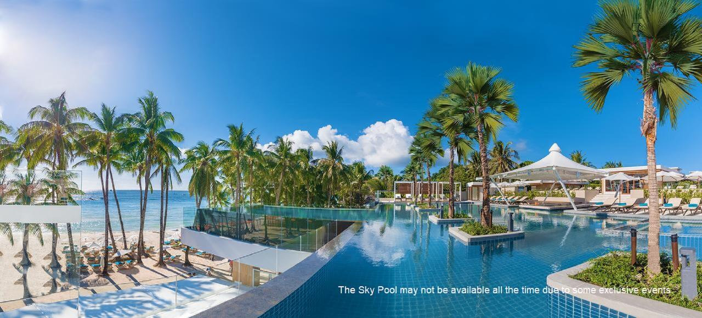
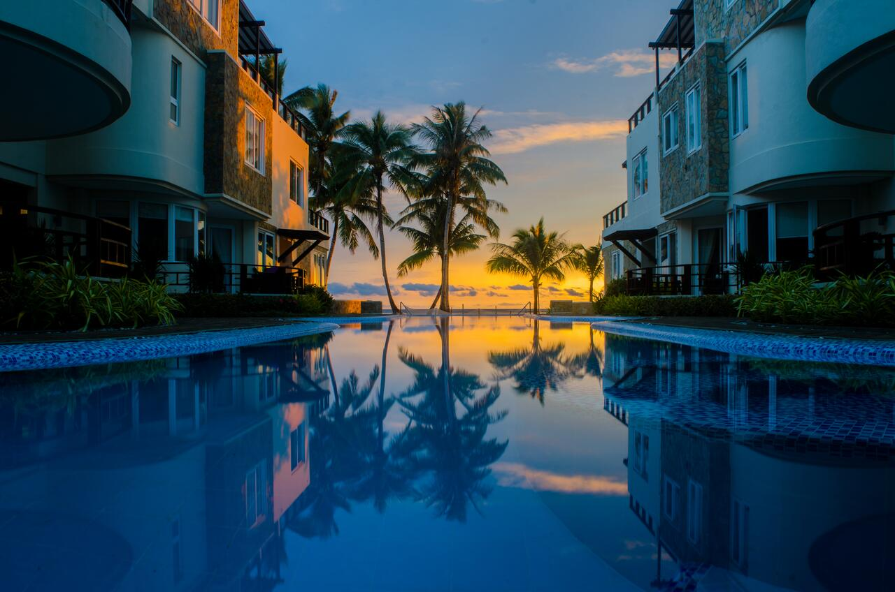
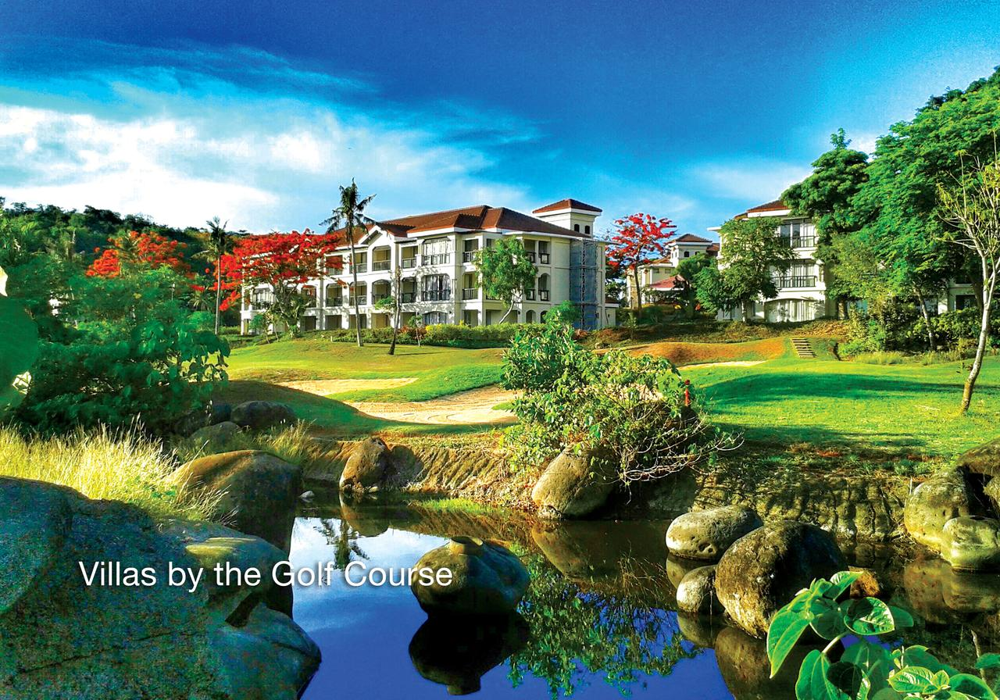

Aklan Itinerary:
Ultimate Travel Guide
Aklan, officially the Province of Aklan, is a province in the Western Visayas region of the Philippines. Its capital is Kalibo. The province is situated in the northwest portion of Panay Island, bordering Antique to the southwest, and Capiz to the east. Aklan faces the Sibuyan Sea and Romblon province to the north.
Aklan, officially the Province of Aklan, is a province in the Western Visayas region of the Philippines. Its capital is Kalibo. The province is situated in the northwest portion of Panay Island, bordering Antique to the southwest, and Capiz to the east. Aklan faces the Sibuyan Sea and Romblon province to the north.
Traveling – it leaves you speechless,
then turns you into a storyteller
- Coast Boracay
- Astoria Current
- Discovery Shores Boracay
- Discovery Shores Boracay
- Shangri-La Boracay
-
Surrounded by a lush hillside overlooking the ocean, Shangri-La Boracay and Spa provides a luxurious and secluded hideaway. It features a 1148 foot private beachfront, 2 stunning outdoor pools and spacious guest rooms and villas. Complimentary internet access is provided.
All rooms have a spacious balcony with a daybed showcasing impressive views, while villas and suites are provided with butler service and either a private pool or outdoor hot tub. They are also fitted with a 37-inch flat-screen TV, DVD player and iPod docking station.
Guests can enjoy a range of water activities from kayaking and deep sea diving to romantic sunset cruises on a wind sail. Guests looking to relax can head to CHI, The Spa. This sanctuary by the sea offers a menu of body massage and beauty treatments.
The cliff-top Sirena Seafood Restaurant & Clifftop Bar serves fresh seafood dishes, while romantic southern European dinners can be enjoyed among the treetops at Rima Mediterranean Treetop Dining Other dining options include pizzas at Cielo Poolside Restaurant & Bar, international breakfast buffet at Vintana Asian Cafe and cocktails at the hotel's 2 bars.
Located on the northwest tip of Boracay Island, the hotel is best reached via a 45-minute domestic flight from Manila to Caticlan. From Caticlan, Boracay Island is 15 minutes away via land and sea transfer.

- 7Stones Boracay
- Fairways and Bluewater Boracay
Boasting a swimming pool and free WiFi access, Coast Boracay offers comfortable, beachfront accommodations in the scenic Boracay Island Region. Guests can unwind after a long day at the pool, or enjoy a drink at the on-site bar and restaurant.
All rooms are fitted with luxurious bedding, a 43-inch Smart LED TV and a private bathroom with shower. For your comfort, slippers are provided.
There is a 24-hour front desk at the property. Complimentary land and boat transfers are provided from/to Caticlan Airport.
Boracay White Beach is 601 m from Coast Boracay, while Willy's Rock is 1.8 mi away. It is a mere 500 m from the popular D'Mall Boracay.
This is our guests' favorite part of Boracay, according to independent reviews.
Couples in particular like the location – they rated it 9.8 for a two-person trip.

Located in Boracay, 0.7 mi from D'Mall Boracay, Current by Astoria features air-conditioned rooms with free WiFi throughout the property. This beachfront hotel has an outdoor pool, restaurant and 24-hour front desk service.
Bright and modern rooms are fitted with a flat-screen TV. Some rooms include a seating area for your comfort. You will find a kettle and refrigerator in the room. The private bathroom includes a bidet, bathtub and bathrobes. For convenience, slippers, free toiletries and a hair-dryer are provided.
At Current by Astoria, guests can utilize the fitness center or request for massage services on site. The friendly staff can assist with laundry service and airport shuttle arrangements.
Boracay White Beach is 0.8 mi from Current by Astoria, while Willy's Rock is 2.2 mi away.

Located at Station 1 of Boracay White Beach just a minute's walk to D'Mall and 15-minute walk to Bulabog Beach, Henann Crystal Sand Resort is a beachfront resort that features of outdoor swimming pools, a restaurant on site, and a 24-hour front desk.
The rooms come with air conditioning, a flat-screen LCD TV with cable channels, and a mini-bar, while the private bathrooms include a hot and cold shower facility and a hairdryer. A seating area and a desk, as well as an electric kettle is included in each room. Select rooms are equipped with a hammock inside the unit while other rooms have direct access to the pool.
Breakfast is available at the property daily. The Sapphire Restaurant is open all day and serves Filipino cuisine with modern ambiance while the sunken pool bar serves some afternoon-lounging cocktails and snacks.
The outdoor pools offer different settings. The sky pool features a sunken pool bar and views of the sea. Other facilities include a gym and fitness center as well as a business center and are at an extra cost.
The staff at the 24-hour front desk can assist guests at any time with any queries or help in planning activities. Luggage storage and laundry services are also available, and airport shuttle services may also be arranged for guests at an additional cost.
Puka Shell Beach is 2.8 mi from the property. The nearest airport is Caticlan Airport, an hour drive and boat ride away from Henann Crystal Sands Resort.

A beachfront property sitting on Boracay Island’s fine white sand, 450 m from Willy's Rock Formation, Discovery Shores offers a spa and an outdoor pool with sunken bar. Free WiFi is available throughout the resort.
Rooms at Discovery Shores Boracay feature views of the pool or the man-made waterfalls. Each luxurious room is equipped with a 32-inch flat-screen TV, DVD player and iPod docking station. A safe and mini-bar are also provided.
Buffets and themed meals at the elegant Sands Restaurant come with beautiful ocean views. Best accompanied by a glass of wine, seafood dinners can be enjoyed at Indigo Restaurant. Flavorful Mediterranean bites and Spanish tapas are available at Platitos and the Pool Bar.
Guests can browse souvenirs at Shorelines Gift Shop or enjoy the game room. Boracay Discovery Shores also has a children’s playground and business center. It offers 24-hour concierge and laundry services.
Discovery Shores Boracay is 3.7 mi from Puka Shell Beach and 5.2 mi from the property by land and boat from Caticlan Airport.

Located on the coastline of Bulabog Beach Boracay, 7 Stones Suites features an outdoor swimming pool with an outdoor spa pool. Free WiFi is available in all areas.
The resort is only a 7-minute walk to Boracay D'Mall and the main White Beach. Caticlan Airport is an hour’s drive away, while Kalibo International Airport can be reached with a 2-hour drive or boat ride. Airport transfer can be arranged at an additional charge.
Fitted with a desk and wardrobe, air-conditioned guestrooms are equipped with a personal safe, a flat-screen TV with cable channels and DVD player. Private bathrooms come with a hairdryer and offer hot or cold shower facilities.
7 Stones Boracay Suites operates a 24-hour front desk that can assist with currency exchange and laundry services. Guests can enjoy recreational activities such as snorkeling, diving, windsurfing and horse riding.
Drinks are available at the bar, while room service is provided.

With views of the on-site 18-hole golf course and its very own private, white sand beach, Fairways and Bluewater Boracay is an eco-friendly resort that also features 6 swimming pools and 20 food and beverage outlets. The resort offers free WiFi in all rooms and selected public areas.
It is 140 m to Ilig-Iligan Beach, while Puka Shell Beach is 2.5 mi away.The property is 1.3 mi from D'mall de Boracay and Cagban Jetty Port is 3.8 mi away. There is a mall with a pharmacy directly opposite the resort. The nearest airport is Caticlan Airport, 4.3 mi from the property. The property offers airport transfers using private boats and vans at additional charges.
The air-conditioned rooms open up to views of the garden, swimming pool or golf course. Each room is equipped with a safe, LED flat-screen TV, fridge and tea/coffee maker. The private bathroom includes shower facilities, free toiletries and a hairdryer.
Several dining options are available at the property. Guests can savor on authentic Italian dishes at Kudetah Italiano Ristorante and Tapas Bar. The Skydeck Bar and Hideway Jacuzzi Bar affords guests a panoramic views of the sea. The We Chill Gastropub serves food and crafted beverages. At the rooftop is the Glass Lounge, a bar that features a glass floor whereas al fresco dining is available at Fiesta Patio.
Guests can visit the resort's fitness and wellness center which features facilities such as a hot tub, steam bath, sauna and gym. For relaxation, guests can enjoy a massage by the beach at Maris Spa or head to Bluewater Spa. Alternatively, the property offers outdoor activities like horseback riding and segway. An indoor playpen and outdoor playground are available for kids. Babysitting and laundry services are available upon request.
Featuring a local and international menu, La Terraza Bistro overlooks views of the beach while The Veranda offers views of the golf course. Laguna Cafe serves modern Asian dishes while Monterey Cafe and Infinity Restaurant serve up an international cuisine. Guests can enjoy Eurasian delights at Ventana Pool Club. A private dinner by the pool or beach can be arranged on request.
